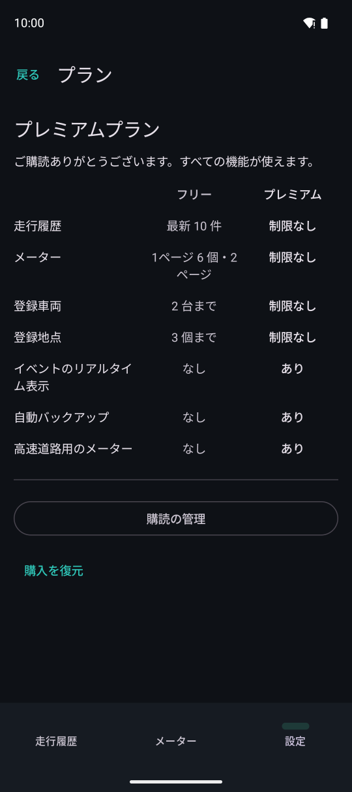

プレミアムプラン
記録とリプレイは、フリープランでも制限なく使えます。プレミアムプラン（定期購読）では、次の制限がなくなり、機能が増えます。
- 走行履歴：すべての走行を表示（フリーは新しい 10 件）。期間で絞り込み
- メーター：項目・ページの数の制限なし（フリーは 1 ページ 6 個・2 ページ）。高速道路用のページ
- 車両・登録地点の数の制限なし（フリーは車両 2 台・地点 3 個）
- 記録中のイベントをメーター・ミニウィンドウにリアルタイムに表示
- リプレイの色分けとグラフの値を増やす（アクセル・エンジン負荷・水温・標高）
- 給油記録から推定燃費を補正
- バッテリー電圧の推移
- 自動バックアップ

設定の「プラン」。購読・解約・購入の復元はここから行います。